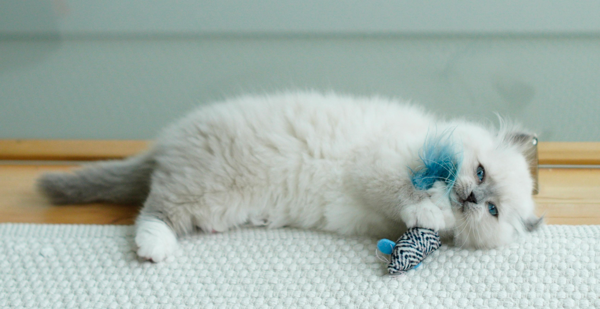

Does your cat deserve the very best in toys, treats, and cozy comforts? Take this fun survey to help us create the purr-sonalized subscription box that fits your cat's unique personality! Whether they’re a playful adventurer, a cuddly nap lover, or a treat connoisseur, we’ve got the perfect box waiting just for them. Answer a few quick questions, and let us tailor each delivery to your feline friend’s exact tastes!
